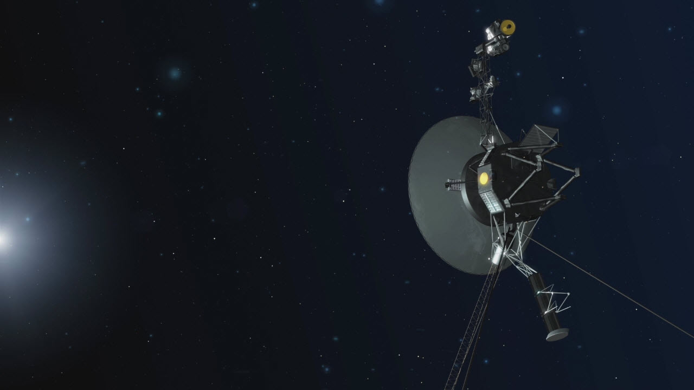

Four and a half decades after launch and over 14 billion miles from Earth, Voyager
1 still makes new discoveries. The spacecraft has picked up the signature of interstellar space
itself, a faint plasma "hum" scientists compared to gentle rain.
Plasma has been part of Voyager 1's mission from its launch — the spacecraft discovered lightning
strikes in Jupiter's atmosphere and studied how the solar wind tapered off in the outer solar
system.
And since 2012, scientists have turned the spacecraft's instruments upon a completely unexplored
part of distant space. That's when Voyager 1 crossed the heliopause, where the solar wind — the
constant stream of charged particles that flows off the sun — is no longer strong enough to hold
back the interstellar medium that surrounds our little neighborhood. Since 2012, as Voyager 1 has
drifted ever farther from the sun, the spacecraft has measured the plasma around it.

This part of the interstellar medium is, mostly, quiet. "It's very faint and monotone, because it is in a narrow
frequency bandwidth," Stella Koch Ocker, a doctoral student at Cornell University who led the new research, said
in a statement. "We're detecting the faint, persistent hum of interstellar gas."